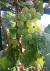

Vattenflöde
Fläkt

Info
Vi har automatiserat vårt växthus med hjälp av mikrodatorn Raspberry Pi, sensorer för temperatur och
fuktighet, egen elektronik samt en solenoid för styrning av bevattning.
Mjukvaran består av frontend i html5, javascript, jquery mobile och körs på apache webserver. Backend är byggt som en RESTFul microservice i Dropwizard och med java-lib:et pi4j för styrning av elektronik. Allt är driftsatt i en Raspberry pi.